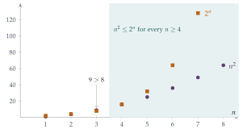

STEP III 2015, Question 2
Read the question before you go on. It is in the STEP Support Programme’s question database: step.maths.org/questions/15-s3-q2
The hook
Almost every statement in a first university analysis course has the same shape: there exists something such that for all somethings, a condition holds. “The sequence tends to \(L\)” means: for every tolerance \(\varepsilon > 0\) there exists a point \(N\) such that for all \(n \geq N\), \(|a_n - L| < \varepsilon\). Students who are fluent with this shape find analysis exciting. Students who aren’t find it baffling.
This question is a gentle, beautifully designed introduction to that way of speaking. It defines one new idea, “eventually smaller than”, and asks four true-or-false questions about it. One of the four is false, and the reason it is false is exactly the trap that catches most first-year students when they first try to negate a statement with quantifiers in it.
Before you start
Read the definition slowly. \((s_n) \leq (t_n)\) does not say that \(s_n \leq t_n\) for every \(n\). It says that from some point onwards it is true. The first few terms don’t matter at all: you can change a million terms at the start of either sequence without affecting whether \((s_n) \leq (t_n)\).
The definition contains the phrase “there exists a positive integer \(m\)”. To prove that \((s_n) \leq (t_n)\), what exactly do you have to produce? To prove that it is false, what do you have to show?
To prove it, you must produce a suitable \(m\) and then show that every \(n \geq m\) works. To disprove it, you must show that no \(m\) works: whatever \(m\) someone proposes, there is some \(n \geq m\) with \(s_n > t_n\). Keep that second version in mind for part (ii).
Working it through
Stage 1 A linear function against a quadratic
Part (i) asks whether \(1000n \leq n^2\) eventually. Since \(n > 0\), this is the same as \(1000 \leq n\). So \(m = 1000\) works: for every \(n \geq 1000\), \(n^2 = n \cdot n \geq 1000 n\). The statement is true.■
It doesn’t matter that \(1000n\) is far bigger than \(n^2\) for the first \(999\) terms. “Eventually” ignores any finite number of terms.
Stage 2 Is “eventually smaller” like ordinary “smaller”?
For ordinary numbers, if it is not the case that \(a \leq b\), then \(b < a\), so certainly \(b \leq a\). Part (ii) asks whether the same is true for our new relation.
What does “it is not the case that \((s_n) \leq (t_n)\)” actually mean? Write it out in full, without the word “not” in front.
The statement “there exists \(m\) such that for all \(n \geq m\), \(s_n \leq t_n\)” is false precisely when
for every \(m\) there is some \(n \geq m\) with \(s_n > t_n\).
In other words, \(s_n > t_n\) happens infinitely often. That is much weaker than “\(s_n > t_n\) from some point on”. The sequences could keep swapping places.
Find two sequences of positive numbers that swap places for ever, so that neither is eventually smaller than the other.
Take \(s_n = 2 + (-1)^n\), so \(s_n = 1, 3, 1, 3, \ldots\), and \(t_n = 2\) for all \(n\). For every \(m\) there is an even \(n \geq m\) with \(s_n = 3 > 2 = t_n\), so it is not the case that \((s_n) \leq (t_n)\). But equally, for every \(m\) there is an odd \(n \geq m\) with \(t_n = 2 > 1 = s_n\), so it is not the case that \((t_n) \leq (s_n)\) either. The statement is false.■
Stage 3 Chaining
In part (iii) you are given two values of \(m\), one for each hypothesis. They might be different. Which one should you use for the conclusion?
Suppose \(s_n \leq t_n\) for all \(n \geq m_1\) and \(t_n \leq u_n\) for all \(n \geq m_2\). If \(n \geq \max(m_1, m_2)\), both inequalities hold, so \(s_n \leq t_n \leq u_n\). So \(m = \max(m_1, m_2)\) works, and the statement is true.■
Taking the larger of two thresholds is a move you will make hundreds of times in analysis. It is how you prove, for example, that the sum of two convergent sequences converges.
Stage 4 A quadratic against an exponential
Try a few values first:
| \(n\) | 1 | 2 | 3 | 4 | 5 | 6 | 7 | 8 |
|---|---|---|---|---|---|---|---|---|
| \(n^2\) | 1 | 4 | 9 | 16 | 25 | 36 | 49 | 64 |
| \(2^n\) | 2 | 4 | 8 | 16 | 32 | 64 | 128 | 256 |
So \(n^2 \leq 2^n\) at \(n = 1, 2\), fails at \(n = 3\), and then seems to hold from \(n = 4\) onwards (Figure 2.1.1). The natural guess is \(m = 4\).
To prove \(n^2 \leq 2^n\) for all \(n \geq 4\) by induction, you need to get from \(n^2 \leq 2^n\) to \((n+1)^2 \leq 2^{n+1} = 2 \cdot 2^n\). What inequality between \((n+1)^2\) and \(n^2\) would make that step work?
It would be enough to know that \((n+1)^2 \leq 2n^2\), because then \((n+1)^2 \leq 2n^2 \leq 2 \cdot 2^n\). Now \(2n^2 - (n+1)^2 = n^2 - 2n - 1 = (n-1)^2 - 2\), which is positive when \(n \geq 3\). So:
Base case: \(4^2 = 16 = 2^4\).
Inductive step: if \(n \geq 4\) and \(n^2 \leq 2^n\), then \((n+1)^2 \leq 2n^2 \leq 2^{n+1}\).
Hence \(n^2 \leq 2^n\) for all \(n \geq 4\), and the statement is true with \(m = 4\).■

Looking back
Proving “there exists” means producing. In parts (i), (iii) and (iv) the proof consisted of naming \(m\) and checking it.
Negating swaps the quantifiers. “Not (there exists \(m\), for all \(n \geq m\), \(P\))” becomes “for all \(m\), there exists \(n \geq m\), not \(P\)”. Getting this right is what part (ii) tests.
A new relation need not behave like an old one. “Eventually smaller than” is transitive, like \(\leq\), but unlike \(\leq\) it does not compare every pair of sequences.
What’s really going on
For about 150 years after Newton and Leibniz, mathematicians used limits and infinitesimals brilliantly but could not say exactly what they meant. Bishop Berkeley mocked infinitesimals in 1734 as “the ghosts of departed quantities”, and he had a point. The repair came in the nineteenth century, when Augustin-Louis Cauchy and then Karl Weierstrass replaced vague talk of “becoming infinitely close” with statements built from “for every” and “there exists”. The modern definition \[a_n \to L \iff \text{for every } \varepsilon > 0 \text{ there exists } N \text{ such that } |a_n - L| < \varepsilon \text{ for all } n \geq N\] has exactly the shape of this question’s definition, with one extra quantifier at the front. It is the first thing you will meet in a university analysis course.
Orders of growth
Part (iv) is one small piece of a famous ladder. For any fixed \(k > 0\) and \(c > 1\), \[(\ln n) \leq (n^k), \qquad (n^k) \leq (c^n), \qquad (c^n) \leq (n!), \qquad (n!) \leq (n^n),\] and in fact each sequence is not just eventually smaller than the next but eventually smaller than any constant multiple of it. G. H. Hardy wrote a whole book, Orders of Infinity (1910), about this kind of comparison. Today it is the everyday language of computer science, where “this algorithm takes \(O(n^2)\) steps” means that the number of steps is eventually at most a constant times \(n^2\). The difference between \(n^2\) and \(2^n\) is the difference between a program that finishes and one that will not finish before the Sun burns out.
Orders that are not total
Part (ii) shows that “eventually smaller” is not a total order: some pairs of sequences cannot be compared at all. Relations like this, transitive but not comparing everything, are called preorders or partial orders, and they turn up everywhere: divisibility of integers, inclusion of sets, and “is a subgroup of” are all examples. Recognising which properties a relation has, and which it doesn’t, is part of the training of a mathematician.
The thinking skill
To prove “there exists \(m\) such that for all \(n \geq m\)…”, name \(m\) and then check every \(n\). To disprove it, show that for every \(m\) some \(n \geq m\) fails.
When a statement has several quantifiers, write it out in full before trying to prove or disprove it, and negate it by working from the left: each “for all” becomes “there exists”, each “there exists” becomes “for all”, and the condition at the end is negated.
Try this next
The specimen warm-up. Try STEP III Specimen paper, Question 2, from the paper issued before the first STEP in 1987. (Hint for the last part: use the next term of the binomial expansion.)
Both ways round. Prove that if \((s_n) \leq (t_n)\) and \((t_n) \leq (s_n)\), then \(s_n = t_n\) for all sufficiently large \(n\).
Racing to infinity. Find two increasing sequences of positive numbers, both tending to infinity, neither of which is eventually smaller than the other.
Up the ladder. Show that \((2^n) \leq (n!)\), giving an explicit \(m\). Then show that \((n^{10}) \leq (2^n)\) and find the smallest \(m\) that works. (A spreadsheet helps for the second part; the answer is surprisingly large.)
Further reading
Lara Alcock, How to Study for a Mathematics Degree (Oxford University Press). Chapter 3 is about exactly this kind of logical language and why new undergraduates find it hard.
Lara Alcock, How to Think About Analysis (Oxford University Press). A friendly guide to the definitions of first-year analysis.
Daniel Velleman, How to Prove It (Cambridge University Press). A systematic introduction to logic, quantifiers and proof.